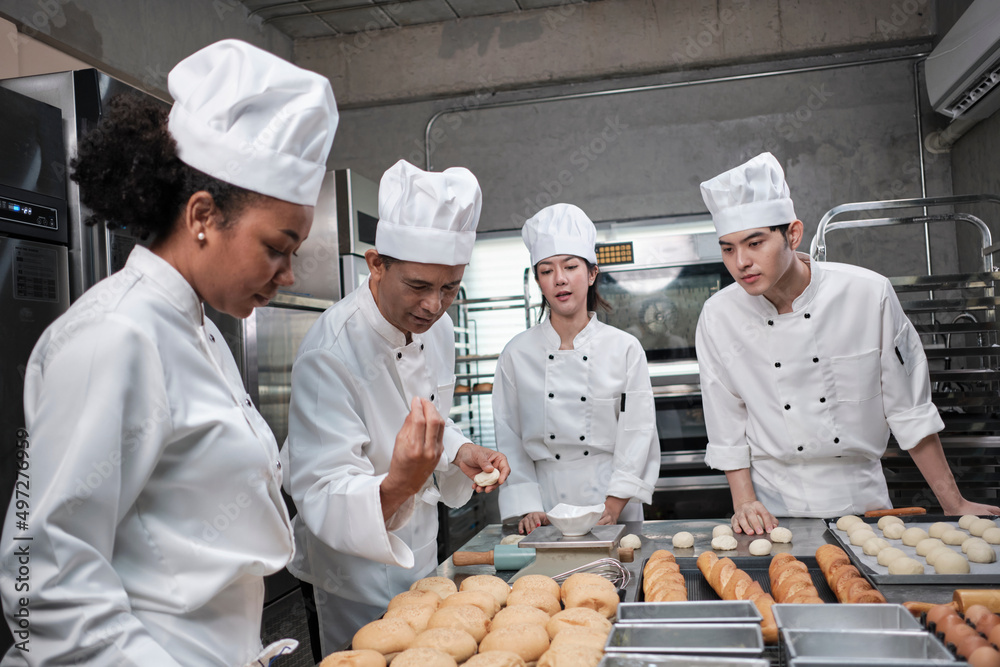

Quienes somos?
Golulu nació en 2020 en la ciudad de Rosario, en plena pandemia, como un pequeño emprendimiento de pastelería casera. Con el tiempo y gracias al boca a boca, la demanda fue creciendo, lo que permitió sumar más personas al equipo y expandir su oferta de productos, desde brownies y cupcakes hasta tortas personalizadas. Al ver el éxito, Golulu abrió su propio taller, convirtiéndose en un referente de la pastelería en la ciudad. Hoy, Golulu es una gran empresa que conserva el espíritu de sus inicios, comprometida con la calidad y la creatividad en cada una de sus creaciones.
Queres volverte un socio?
Golulu, una destacada empresa pastelera en crecimiento, invita a nuevos socios a unirse a su expansión. Fundada en Rosario en 2020, Golulu se ha consolidado en el mercado gracias a su compromiso con la calidad y la innovación en repostería. Ahora, buscamos personas apasionadas que deseen asociarse y ser parte de nuestras decisiones, beneficiándose del éxito continuo de la marca. Esta es una oportunidad única para invertir en una empresa con visión de futuro. ¡Contáctanos y descubre cómo formar parte de Golulu y crecer juntos!.